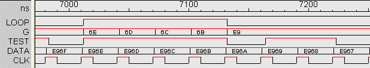

|
DesignWorks Digital Simulator - Specifications
General Simulation Features
- All delay time values are specified in real time units with femtosecond precision
- All signal values can be displayed simultaneously on the schematic
- New Model Wizard command simplifies creating and attaching simulation models using structural schematics or VHDL.
- Simulation is fully interactive. Any design or parameter changes made in the schematic are immediately reflected in simulation results.
- Simulation is operational over any number of hierarchy levels. Sub-circuits can be opened, edited and probed while the simulation is running. The simulation scope can be restricted, allowing a part of the design to be simulated independently.
- Signal values can be set and probed right on the schematic diagram, either using permanent probe, switch and display device symbols or a probe cursor tool.
- Uses thirteen signal states to correctly model high and low drive levels, high impedance, conflicting and unknown signals.
- A device delay can be associated with any primitive device type. In addition input and output pin delays can be associated with any device, including primitives and hierarchical blocks. This allows device path delays to be completely customized to match the actual circuit implementation.
- Common logic devices such as gates, flip-flops, registers, counters, multiplexers, etc. are implemented as "primitive" devices with built-in simulation models. These devices are completely scalable, meaning that, for example, a 128-input AND gate or a 52-bit register can be implemented as a single primitive device.
- Bidirectional switch and transmission gate devices are supported, allowing simulation of switch-based logic.
- Initial states can be specified for any device pin or signal. This state is then set up automatically when the simulation is reset.
- RAM, PROM and PLA primitives allow programmable devices to be constructed from an external file.
- Trigger capability provides logic analyzer-style word recognition and delay features. Actions can be taken based on time and signal value criteria, including events longer or shorter than a specified value. Trigger actions include stopping the simulation, enabling or disabling the display and generating a reference mark in the timing diagram.
- Simulation speed controls allows the simulation to be slowed or single-stepped to view critical events.
Timing Display Features
- The Timing tool allows any number of signals in the design to be displayed simultaneously. Traces can be scrolled and reordered at any time.
- VHDL enumerated types can be displayed directly on the timing waveforms.
- Grouping feature allows any number of signals to be grouped into a single trace with hexadecimal value display.
- Traces scroll continuously as the simulation progresses keeping the latest events in view.
- Display can be disabled and enabled manually or under trigger control to reduce display overhead and speed up the simulation.
- Timing data can be written to and read from text files in a test vector format.
- Timing diagrams can be printed to any standard printing device.

Test Vector Features
- Test Vector tool provides editing and execution of test vectors used to apply and test values in the circuit under test.
- Control commands allow repeat loops and synchronization with the circuit under test.
- Test vector sequences can be started automatically when a simulation is run.
Model Libraries
- Over 800 models are included, covering the standard 74xx and 4000 logic families. Microprocessors and other models are available separately.
- Models can be automatically loaded and attached to existing schematics created using the standard DesignWorks/Schematic libraries.
|